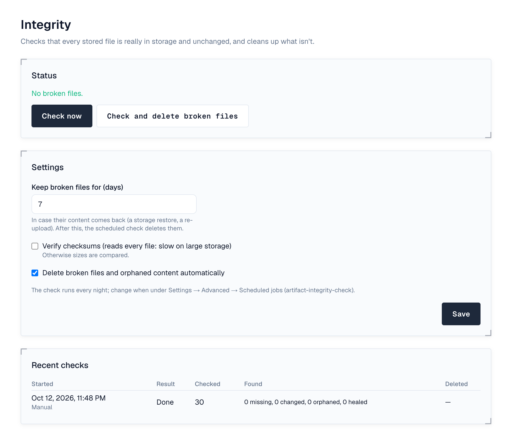

1. Overview
Files in repositories are recorded in the database and kept in storage. The integrity check, under Settings → Repositories → Integrity (super admins), makes sure the two agree. It runs every night and whenever you select Check now. Every license tier; automatic deletion needs Enterprise.
The top of the page says where things stand (no broken files, how many are broken, a check running, or checks paused while storage isn't verified) with Check now and Check and delete broken files, and below it the last check, how many files it read and when the next one runs.

| Finding | What happens |
|---|---|
| A file's content is missing from storage, or has the wrong size (or checksum, with checksum verification on) | The file is broken: hidden, not downloadable (404) and no longer counted in the space's usage. It stays listed under Broken files, with its repository, why (Missing from storage or Content changed), since when and, while automatic deletion is on, until when it is kept. |
| The content of a broken file is back (a storage restore, or someone uploads the same file again) | The file is whole again, at the next check or at once on upload. |
| Storage holds content that no file uses and the database doesn't know (older than a day) | Counted as orphaned content. |
A download that finds a file's content missing also hides the file straight away.
2. Repair
- Broken files are kept for Keep broken files for days (7 by default), in case their content comes back. After that, the nightly check deletes them, with versions left empty, and removes orphaned content, when Delete broken files and orphaned content automatically is on (Enterprise).
- Check and delete broken files does it now, on any tier: every broken file is deleted whatever its age. You're asked to confirm.
Checks and deletions only run when the server's storage is verified as this installation's (Settings → Storage). On the wrong storage every file would look missing, so the check is skipped instead.
3. Settings
- How files are checked: Compare sizes (fast; catches missing and truncated files) or Verify checksums (re-reads every file and compares its SHA-256; catches any change, slow on large storage).
- The nightly time is the artifact-integrity-check job under Settings → Advanced → Scheduled jobs.
Recent checks lists each run: what it checked, found (missing, changed, orphaned, healed) and deleted. The system check warns when files are broken, or the last check failed, was skipped or is over a week old.
4. Events
artifact.integrity.broken (after) is raised when a check finds missing or changed content, so automation can alert someone; artifact.integrity.repair (before and after) wraps deleting. Repairs and setting changes are recorded in the audit log. See Events.
5. Permissions
| Permission | Who | Allows |
|---|---|---|
| integrity:admin | Super admins only | Running the check and repair, and changing its settings |